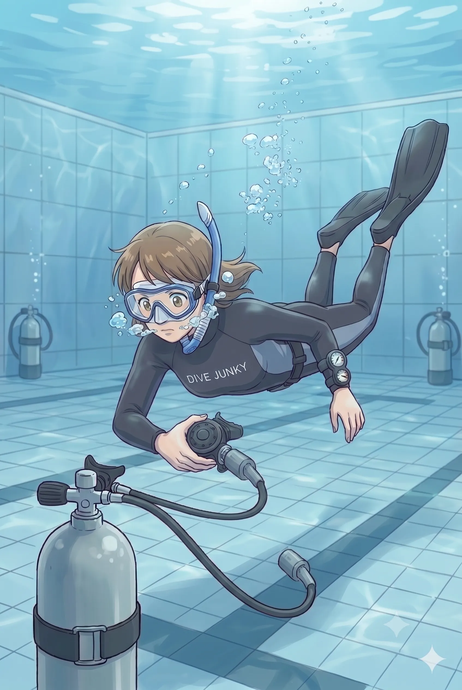

The road Orz passed by 2026 年 06 月
06 月 21 日 ( 日 )
Dive #169 エアーステーションからいろいろ想う
「このフリーアセントの練習はしない。代わりに、エアーステーションを行う」
日本水中科学協会のトレーニングガイドにそんな記述を見つけた。

エアーステーション、むっちゃやったな。紀伊勝浦にまだ温泉プールがあった頃。1994 年。アシスタント・インストラクター・コースから、今はほとんど行われない古 のトレーニングをいろいろやってた。
※ 今でもダイブマスターコースや ITC に向けたトレーニングではやっているかもしれない。
そのなかの 1 つがエアーステーション。
プールの 4 隅にレギュレーターをつけたタンクを沈めておいて、最初はプールの 1 辺ごとにエアーを 1 息だけ吸って、泳ぎ、プールを一周する。
そしてエアーを吸う頻度をだんだんと減らしていく。もちろん水中を泳いでいる間はフリーアセントのように息を吐き続ける。
最終的にはプールの 4 隅を1 周回るたびに 1 呼吸まで、ってところまで呼吸回数を減らしていく。最終的に 1 呼吸で 50m は超えていたと記憶している。
これをなぜやっていたのかというと、最終的には本当の意味でのベイルアウト、全機材を水中に放棄してフリーアセントで水面に脱出するスキルを獲得するためになる。
以下に日本水中科学協会 旧サイトからフリーアセントを想定したトレーニングに関する記述を抜粋する。ぼくが経験したエアーステーションのほうが少し楽かもしれない。
フリーアセントは、海底でタンク（ＢＣＤ）ウエイトベルトをぬぎすてて、空身で、フリーで浮上する緊急時の浮上方法の一つである。水中脱着のトレーニングは、このフリーアセントのためだけのものではないが、達成維持基準に達していれば、脱ぎ捨てるのは容易である。ほんの１０秒もかからないはずである。そのまま、特にフィンで蹴ることもなく、ウエットスーツの浮力と身体の浮力によって、浮上する。
なお、このフリーアセントの練習はしない。代わりに、エアーステーションを行う。
プールなど水深１．５ｍの水底にタンクにウエイトを着けて浮き上がらないようにして置き、スキンダイビングで潜り、このタンクから呼吸する。タンクは二箇所もしくは三箇所に置く。タンクから二回呼吸したら、バルブを閉めて別のタンクに移動する。別のタンクで二回呼吸したら、また別のステーション（タンク）に移動する。垂直方向のフリーアセントのシミュレーションとして、危険のない水平移動に置き換えた練習であるから、タンク間の移動は、口笛を吹くように少しずつ息を吹き出し、肺の中の空気が半分ぐらいになっている感じで次のステーションに到着するように練習する。言うまでも無く、水面に浮き上がって顔を出してしまえば失敗である。
ITC に向けたいろんなトレーニングをしていたこの頃が一番刺激的だったな。その年の ITC に間に合わなかったけど。
日本水中科学協会は須賀治郎さんも設立者のお一人で、基準やトレーニングガイドに須賀さんの香りがする。
基準やトレーニングの至るところにこれ以上はやってはいけない、という文言と共に、理由が書かれている。死亡事故が何度も起きている、だからこれ以上やってはいけないという記載があって、それだけじゃないけれど、今でも勉強になるし、かつてぼくが受けてきたトレーニングの意味とかも了解できる。
アシスタント・インストラクターとして何百回も緊急スイミングアセントのデモをゲストに見せていただけではなく、ITC を目指してトレーニングしていた日々も、もしかすると 1999 年の住崎で水面まで戻ることができた背景の一つだったのかもしれない。
やっぱり全てのトレーニングって意味があるんだなぁ。
- => 日本水中科学協会
- => 日本水中科学協会 旧サイト
- Category :
- #Records of Orz's Road
- #